0. 结论先行
一句话：B300 是双近光罩 + 8 组 12-Hi HBM3e 的非均匀热源。冷板必须按两处 GPU 驻点射流 + HBM 低速微通道、中间隔离肋设计，不得一条等宽槽浇整盖。保证点按 Lenovo TGP 1100 W；包络按 NVIDIA 公开最大 TGP 1400 W。两档不得混成一个保证数。
- 芯片：Blackwell Ultra，TSMC 4NP，2080 亿晶体管，2 颗近光罩 die由 NV-HBI 10 TB/s 连成一颗 CUDA GPU；最多 160 SM / 8 GPC；8×12-Hi HBM3e，容量 288 GB（可用口径有 279/270 GB），带宽 8 TB/s（Lenovo 写 7.7 TB/s）。高
- 热：双计算 die = 两个主热点；HBM 热流较低但怕冲蚀。硅面积平均约 70–93 W/cm²，热点估 170–230 W/cm²。结–进液 50 K 上限：1100 W → 0.045、1400 W → 0.036 °C/W；工程目标 <0.028 / <0.025。
- 本设计 CP-B300-JM-01：锻造紫铜底板短微通道 + 可拆/可钎焊喷嘴盖板。GPU 区 2×8×8 微射流（D=0.50 mm，H/D=4，S/D=6）；HBM 区无射流。设计流量 2.0 L/min（水、40 °C），包络 2.4 L/min。0 维估算冷板对流热阻约 0.010–0.016 °C/W，加上 TIM2 后仍能打 DP-A；DP-B 余量薄，必须 CFD + TTV 冻结。
- 工艺：底板铲齿或 CNC，盖板微钻/蚀刻，真空钎焊或扩散焊，密封面精铣。不把整板金属 3D 打印作出货基线。
- 本文件不是NVIDIA / Lenovo 订单 ICD，也不是 FAT 保证书。几何与流量在拿到封装热图和机柜表之前均为候选。
1. 范围、口径与置信度
| 项 | 本报告 |
|---|---|
| 对象 | 单颗 NVIDIA B300（Blackwell Ultra）SXM 液冷冷板。不含 Grace、NVSwitch、CX-8 冷板，不含 CDU / 机柜歧管详细设计。 |
| 系统位置 | GB300 NVL72 Compute Tray 上 4 颗 B300 各一块独立冷板；水力服从机柜 OEM 表。 |
| 工质 | 设计计算用 DI 水，40 °C。PG25 按换热约 −15%、粘度上升校核，不另出一套几何。 |
| 功率两档 | DP-A 1100 W = 保证 / 选型（Lenovo SXM DLC TGP）。DP-B 1400 W = 包络（NVIDIA 公开 max TGP）。不得相加，也不得把 1400 写成 1100 的保证点。 |
| 禁止 | 用固定 10 K 温升反推正式流量；把 ASHRAE W45 写成机柜进液；把厂商“单 GPU 2400 W”当基线。 |
高 = NVIDIA / Lenovo / 本仓库 GB300 v2.2 原文。 中 = 公开白皮书或合理工程估算，须复核。 低 / 待冻结 = 封装外形、热图、单板 ICD 流量，不得写入合同。
| 上游文件 | 本报告继承 |
|---|---|
| 《NVIDIA GB300 NVL72 冷却系统总体设计报告 v2.2》 | 整柜 135/155 kW、约 90/10、入口 25–45 °C ↔ 59–177 L/min、压降 16–127 kPa、DI / PG25 |
| 同目录专利分析报告 v1.4 | 方案 A：GPU 射流 + HBM 无射流 + 隔离肋；工艺三分流 |
| NVIDIA Blackwell Ultra 开发者博文（2025-08-22） | 双 die、NV-HBI、8×12-Hi HBM3e、最大 TGP 1400 W |
| Lenovo LP2357 | B300 TGP 1100 W；HBM 288 GB / 7.7 TB/s（该页） |
2. B300 芯片方案与关键结构
冷板要对的不是“一块 1100 W 的铜盖”，而是两个计算 die + 八个 HBM 堆叠。热图、压装和射流禁区都由这张图决定。
2.1 硅与封装（公开已冻结）
| 项目 | 公开值 | 对冷板的含义 | 置信度 |
|---|---|---|---|
| 架构 / 工艺 | Blackwell Ultra；TSMC 4NP | 与 B200 同代硅，功率和 HBM 加码 | 高 |
| 晶体管 | 2080 亿 | 双近光罩才能放下 | 高 |
| 计算裸片 | 2 颗，NV-HBI 10 TB/s，对软件仍是一颗 GPU | 两个主热点，各要一套射流阵列，中间隔缝不要喷空 | 高 |
| SM / GPC / Tensor | 最多 160 SM、8 GPC、640 个第五代 Tensor Core（SKU 可少） | 热图随 SM 开启变化，喷嘴密度应按 power map 单调增加 | 高 |
| HBM | 8 组 12-Hi HBM3e；16×512-bit 控制器 | 八个次热点；堆叠与焊球怕高速射流冲蚀 | 高 |
| 容量 / 带宽 | 288 GB / 8 TB/s（NVIDIA）；Lenovo 写 7.7 TB/s；数据手册另有 279/270 GB 可用口径 | 容量口径差不影响冷板；HBM 必须被冷板盖住 | 高 |
| NVLink | NVLink 5，1.8 TB/s | 桥与 I/O 在盖板边缘，冷板开孔/压装避开 | 高 |
| 形态 | SXM，数据中心液冷；无消费级 PCIe 卡 | 必须 D2C 冷板；风冷不在范围 | 高 |
| 功率 | NVIDIA：configurable up to 1400 W TGP；Lenovo SXM DLC：1100 W TGP | 见第 3 节两档 | 高 |
2.2 热源分区（设计假设，须热图冻结）
NVIDIA 未公开 B300 封装外形和 die 坐标。本设计按同代双 die 量级取值，全部标 待冻结：
| 对象 | 几何假设 | 功率拆分假设 | 说明 |
|---|---|---|---|
| 单计算 die | 约 27×28 mm（≈7.5–8.0 cm²） | DP-A 各 430 W；DP-B 各 545 W（合计约 78%） | 沿用 B200 级双 die 面积 |
| NV-HBI 缝 | 两 die 之间约 2–4 mm | 低 | 不要对着缝打密集射流 |
| 单颗 HBM 堆 | 约 11×11 mm | DP-A 约 25 W；DP-B 约 32 W（八颗合计约 18%） | 12-Hi 自身发热，必须盖到 |
| I/O / 其它 | 盖板边缘 | 约 4% | 靠铜扩热，不单独射流 |
| 冷板作用面积 | 95 × 75 mm（候选） | — | 含压装边；最终跟 SXM 盖板图 |
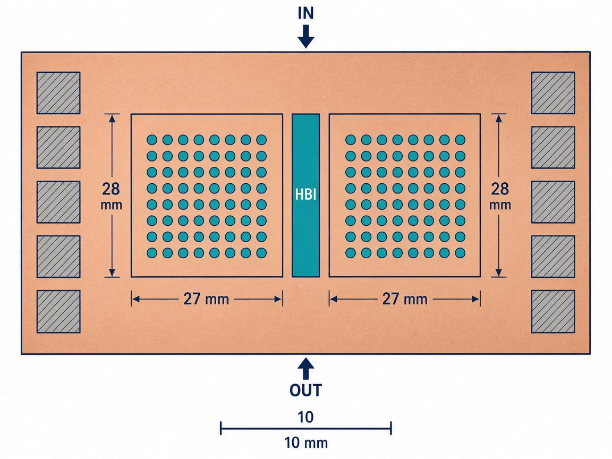
图 2-1 · 自绘示意 与图纸节 P0 同一套候选坐标：两颗 27×28、每侧 4×11 HBM、上 IN / 下 OUT。位图文字若粘连，以 §图纸锁定表为准。

论文原图 · 多芯片非均匀热图（GB200 模组，作类比） 2×GPU + CPU 的 footprint 平均只有 35–40 W/cm²，die 平均高得多。B300 单封装没有 Grace，但仍是双 die + HBM，不能一条等宽槽。来源：arXiv:2604.10941，Fig. 1。调研材料抽出。
3. 热力学参数与热阻预算
3.1 设计点与包络
| 参数 | DP-A 保证点 | DP-B 包络 | 来源 |
|---|---|---|---|
| 芯片功率 P | 1100 W | 1400 W | Lenovo TGP / NVIDIA max TGP |
| 进液 Tin | 40 °C（计算） | 25–45 °C（OEM 表） | GB300 表；W45 不是进液保证 |
| 结温包络 Tj | 83–90 °C | 同左 | 厂商常见，中 |
| 可用温差 50 K / 38 K | 上限 Rθ 0.045 / 0.035 | 0.036 / 0.027 | ΔT/P |
| 工程目标 Rθ,c-in | < 0.028 °C/W | < 0.025 °C/W | 含 TIM2 与不均 |
| 对应壳–进液温升 | < 30.8 K @ 1100 W | < 35.0 K @ 1400 W | 目标反算 |
图 3-1 热阻台阶（横轴按 0.045 = 100%）。越小越好。
3.2 热流密度（平均 vs 热点）
| 区域 | 面积假设 | DP-A q″ | DP-B q″ | 热点估（×2.5） |
|---|---|---|---|---|
| 单计算 die 平均 | 7.8 cm² | ≈55 W/cm² | ≈70 W/cm² | 140–175 |
| 两 die 硅面积平均 | 15.6 cm² | ≈55（仅 GPU 功率）/ 全封装 70 | ≈70 / 90 | 双驻点 |
| 单颗 HBM | 1.2 cm² | ≈21 | ≈26 | 不必射流 |
| 盖板 footprint 平均 | 71 cm²（95×75） | 15.5 | 19.7 | 设计用 footprint 会低估 die |
3.3 热阻链拆分（设计分配）
| 环节 | DP-A 分配 °C/W | 说明 |
|---|---|---|
| 硅扩散 + TIM1 + 盖板（封装侧） | 0.008–0.012 | 冷板改不了；MLCP 才能砍 TIM2 |
| TIM2 | 0.004–0.008 | 面积热阻 0.1–0.2 °C·cm²/W / 有效面积 |
| 铜壁导热 | 0.001–0.002 | 底板 1.5–2.0 mm C110 |
| 对流（射流+短通道） | 0.010–0.014 | 本设计主攻 |
| 合计壳–进液 | 0.023–0.028 | 落在 DP-A 目标内 |
DP-B 要把对流段压到约 0.008–0.012，或减薄 TIM2 / 上 MLCP。本版仍是独立冷板 + TIM2，1400 W 不作为出厂保证点，只做包络仿真。
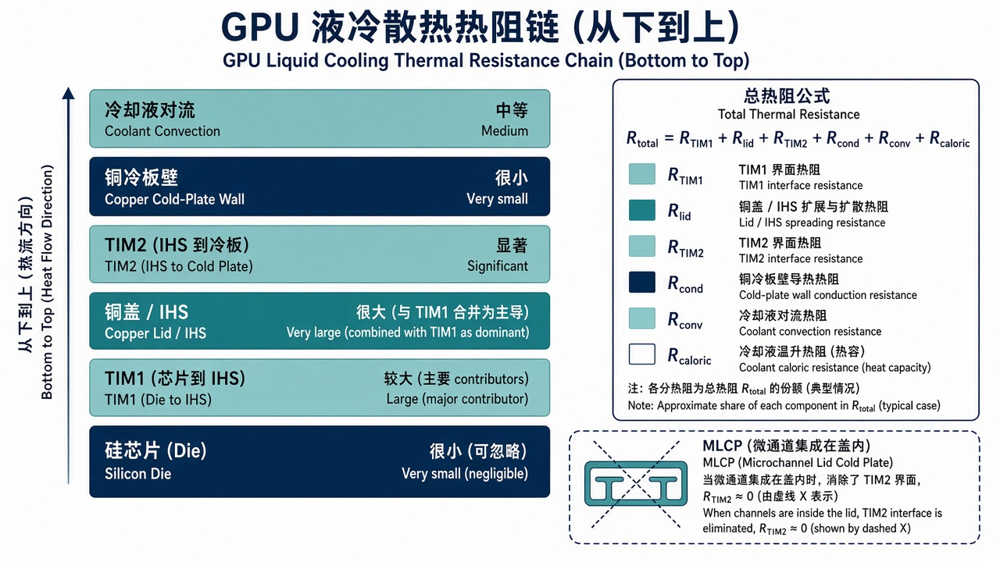
图 3-2 · 自绘示意 结–进液热阻链。本设计只能动 TIM2 以下（铜壁 + 对流）；封装内 TIM1/盖板由 NVIDIA 冻结。TIM2 面积热阻 0.1–0.2 °C·cm²/W 往往占掉一半预算，这是后续 MLCP 的理由，但不是 CP-B300-JM-01 的 12–18 个月出货路线。
4. 冷板规格要求（写入送样大纲）
| 层级 | 指标 | 要求 | 性质 |
|---|---|---|---|
| 热 | Rθ,c-in | DP-A <0.028 °C/W @ 2.0 L/min、Tin=40 °C、DI 水、TTV 或等价加热块 | 送样目标 |
| 热 | 均温 | 两 die 中心温差 ≤5 K；HBM 区最高点低于 GPU 驻点 | 送样目标 |
| 热 | 包络 | DP-B 1400 W 仿真 R ≤0.025；不写入首批保证 | 仿真包络 |
| 水力 | 设计流量 | 2.0 L/min（水）；PG25 同几何下流量可加到 2.2–2.3 | 候选，待 ICD |
| 水力 | 包络流量 | 2.4 L/min（对应 1400 W 初筛） | 候选 |
| 水力 | 冷板压降 | 设计点 ≤18 kPa；上限 20 kPa（不含机柜歧管） | 送样目标 |
| 水力 | 流体温升 | 2.0 L/min、1100 W、水 ≈ 7.9 K（计算值，不是流量反推公式） | 留档 |
| 接触 | 平面度 / Ra | ≤0.05 mm；Ra ≤0.8 μm | 机加 |
| 材料 | 本体 | 紫铜 C110 / C1020；接触面镀镍可选 | 冻结候选 |
| 工质 | 相容 | DI 水与 PG25；禁纳米流体 | 与 GB300 一致 |
| 过滤 | 系统侧 | 投运 ≤25 μm；按最小孔径 0.50 mm 的 1/10 校核更严过滤 | 系统 |
| 密封 | 氦检 | 100% 氦检；保压按 OEM | 出厂 |
| 接口 | 快接 | 跟 Tray UQD，不自创口径 | 待 ICD |
5. 方案选择：微通道 + 冲击换热（分区）
纯铲齿打 DP-A 勉强、打 DP-B 紧；纯射流均温差、HBM 受冲蚀。本方案采用专利报告方案 A：GPU 区射流+短微通道，HBM 区只微通道，隔离肋切断串流。
5.1 为什么是杂交而不是二选一
| 纯微通道 / 铲齿 | 纯射流平板 | 本方案（分区杂交） | |
|---|---|---|---|
| 双 die 热点 | 沿程出口侧先热 | 驻点好，交叉流吹歪下游 | 每 die 一套短流程射流，抽吸抑制交叉流 |
| HBM | 能盖住，流速易偏高 | 高速射流伤堆叠 | 无喷嘴，近壁 ≤0.8 m/s |
| 压降 | 长槽高 | 孔板集中 | 短槽 + 中等孔速，目标 ≤20 kPa |
| 可制造 | 铲齿+钎焊熟 | 三层对位 | 底板机加 + 盖板钻孔，12–18 个月可交货 |
| 专利 | 直槽空间窄 | 阵列已密 | 带 HBM 禁射流、流速帽、隔离肋、压降窗 |
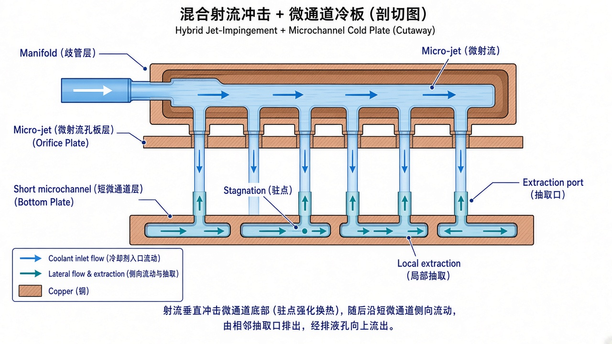
图 5-1 · 自绘示意 杂交单元：上歧管 → 喷嘴驻点 → 短通道 → 抽吸。GPU 区重复此单元。

图 5-2 · 自绘示意 双物理分区，与 B300 双 die + 双侧 HBM 对齐。HBM 无射流。

论文原图 · 射流三区 自由射流、驻点、壁面射流。本设计 H/D=4 落在驻点核完整、交叉流尚未主导的窗口。来源：Hussain et al., Energies 2021, Fig. 1。

论文原图 · H/D 对换热 过近则势核未展、过远则到达速度掉。本设计取 4，不取 2 或 8。来源：Hussain et al., Energies 2021, Fig. 7。
物理分工
射流把 GPU 热点边界层压薄（驻点 h 最高）；短微通道把废液在 ≤8 mm 内抽走，避免长槽沿程温升。HBM 用更大水力直径、限制近壁速度。隔离肋同时是流道隔墙和抗弯筋，减轻压装偏载传到 HBM 焊球。
工作原理（看图说明）
冷板要解决的不是“把 1100 W 均匀摊在 95×75 mm 上”，而是两个高热流计算 die + 八个怕冲蚀的 HBM。工质从板上沿进（设计点 40 °C、2.0 L/min 水），盖板按孔阻分成两路：80% = 1.60 L/min 向下打在两颗 GPU 铜壁上，驻点换热后沿 ≤8 mm 短槽抽走；20% = 0.40 L/min 只在两侧 HBM 平流，隔离肋不许高速串流。流体混合温升只有约 7.9 K（出口约 48 °C），这是 0 维 P/(ṁ cp)，不是 10 K 规格，也不是壁面/结温。壁面最热在两个射流驻点，结温还要再高一截。
2.0 L/min · 40 °C
1.60 / 0.40 L/min
2×8×8 · 驻点最高 h
L≤8 mm · 抑交叉流
无喷嘴 · V≤0.8
流体 ≈48 °C · 非最热
以下各图均为自绘示意，不是共轭 CFD，不是 NVIDIA 订单 ICD。外形 95×75 mm、die / HBM 坐标均为候选，待订单 ICD。数字与第 6–7 节表格一致。
1. 先看问题：一条长槽会怎样
B300 对软件是一颗 GPU，对冷板是两块 27×28 mm 的主热源并排，中间隔着 2–4 mm 的 NV-HBI 缝（本设计取 3 mm）。DP-A 每颗 die 约 430 W，硅面积平均约 55 W/cm²，热点按 2.5 倍估 140–175 W/cm²；八颗 HBM 合计约 18% 功率，单颗约 21 W/cm²。若用一条等宽长槽从板上沿浇到下沿，会出现三件物理上必然的事：
- 沿程预热：冷却液先扫过上游 die 边缘，再到达下游驻点时已经热了一截，出口侧先超温。
- 交叉流吹歪：上游射流的废液变成横风，把下游射流的驻点核吹偏，h 掉、均温变差。
- HBM 被高速冲：若整板同一孔速，12-Hi 堆叠与焊球承受不必要的近壁剪切；若整板同一低速，GPU 热点又打不下来。
所以方案必须是分区杂交：GPU 要高 h 的射流 + 短流程抽吸；HBM 要大水力直径、限速、无喷嘴；中间用隔离肋做成真正的水力隔墙，而不是画一条装饰线。
2. 能量从哪来、热量进哪去
设计保证点 DP-A = 1100 W（Lenovo TGP）。功率拆分是封装假设，不是官方热图：两颗计算 die 合计 78%（各 429 W），八颗 HBM 18%（合计 198 W），I/O 与其它 4%（44 W）。429+429+198+44=1100。这些热最终几乎全部进冷却液——冷板改不了硅、TIM1、盖板，只能动 TIM2 以下的铜壁导热和对流。
自绘真比例图 P7 · 能量分流（数值基准） Die-A 429 W + Die-B 429 W = 858 W（78%）；HBM 八颗合计 198 W（18%，单颗 24.75 W，正文常约写 25 W / 200 W）；其它 44 W（4%）。四项相加 1100 W。这是功率去向，不是流量去向。置信度 中低：待官方 power map。旧位图 b300-prin-energy-split.png 不再嵌入（曾把 78% 标两次）。
看图步骤 · 热阻链（冷板只拥有下半段）
热流路径：硅 → TIM1 → 盖板 → TIM2 → 铜壁扩热 → 对流进液体。封装内侧（硅 + TIM1 + 盖）大约 0.008–0.012 °C/W，本设计动不了。TIM2 约 0.004–0.008。铜壁导热约 0.001–0.002。对流是主攻段，目标 0.010–0.014 °C/W。合起来壳–进液 0.023–0.028，落在 DP-A <0.028 的窗里。DP-B 1400 W 要把对流再压一截，本版只作包络，不作出厂保证。
3. 分流：为什么是 80 / 20，孔阻怎么实现
2.0 L/min 不是用 10 K 反推的正式机柜流量。取这个数，是因为 128 个 0.50 mm 孔要维持约 1.06 m/s 的孔速（ReD≈810），同时给 PG25 和脏污留裕量。分配：
| 回路 | 流量 | 实现 | 近壁 / 孔速 |
|---|---|---|---|
| 两 GPU 射流区 | 1.60 L/min（80%） | 128 孔总面积约 25.1 mm²，孔口本身就是限流元件 | Vjet≈1.06 m/s |
| HBM 两侧 | 0.40 L/min（20%） | 单独进液缝 + 0.60×1.50 mm 宽槽，无喷嘴 | V≈0.46 m/s，帽 0.80 |
80/20 跟着热流走：GPU 需要高 h，必须把大部分质量流量送到驻点；HBM 热流低一个量级，多送水只会抬压降、抬冲蚀，帮不上结温。分配靠盖板开孔和隔墙，不靠外置调节阀。样件用分区流量计标定，偏差目标 ±10%。重力在这个雷诺数下可以忽略——抽吸靠压差和专用回液孔，不是“热流体向上浮”。
4. 整板三维流体走向
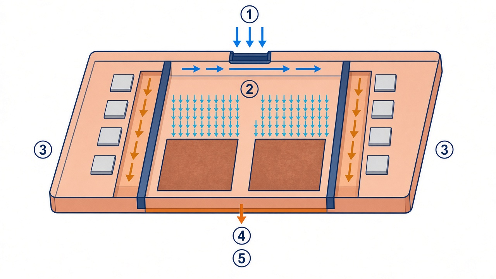
图 P1 · 自绘示意 板按薄板画（真实 8.5 mm），不要理解成空心箱子。蓝→青→琥珀→橙只给流体，铜保持铜色。
看图步骤 · P1（眼随编号，约半分钟）
① 先看板上沿：蓝箭进入薄进液歧管，还是约 40 °C 的冷液，2.0 L/min。这一步没有换热任务，只是把静压铺开，让两套 8×8 孔和两侧 HBM 缝都吃到压力。
② 再看板心两片密密的下指箭：那是 GPU 的 128 个微射流（每 die 8×8，节距 3.0 mm，阵面 21×21，落在 27×28 里）。80% 的水在这里向下打到铜壁。箭密，是因为 0.50 mm 孔按 3 mm 铺，本来就该看起来挤，不是五六个卡通喷头。
③ 左右各一列四个灰块是 HBM。琥珀箭只沿这两列走，流量合计 0.40 L/min。海军蓝竖墙是 2 mm 隔离肋：没有任何箭穿过肋。肋同时是流道隔墙和抗弯筋，减轻压装偏载传到 HBM 焊球。
④⑤ 下沿收集器把两路废液汇合。颜色偏橙，只表示流体比进口热了约 8 K，不是芯片 80 °C。然后出板。位图若把 ④⑤ 叠在一起，当作出液一步即可。HBM 必须是 8 颗；若位图多画或少画，以锁定坐标为准。
5. 比例基准顶视（毫米真比例 + 流向）
位图容易把 die 画太大、HBM 画成一串小点。下面这张 SVG 的外框就是 95×75 mm。Die-A (19.0, 23.5)、HBI 3 mm、Die-B (49.0, 23.5)、每侧四颗 11×11（x=5.0 / 79.0，y=12.5 / 25.5 / 38.5 / 51.5）、射流阵 (22,27) 与 (52,27) 各 21×21、肋宽 2 mm，全部按毫米落笔。原点工程上在左下，本图 Y 向下。
自绘真比例图 P0 · 比例基准（SVG） 蓝带=进液歧管（流体 40 °C）；两颗 die 中心偏红=壁面驻点，不是流体 48 °C；青绿 8 块=HBM，只走青箭平流；海军蓝竖条=隔离肋；橙带=出液歧管（流体 ~48 °C）。密点是 8×8 射流落点。封装坐标未公开，待 ICD。
看图步骤 · P0
先对尺寸：die 27×28 明显大于 11×11 的 HBM；HBI 只有 3 mm 细缝，不要对着缝打密孔。再对流程：蓝箭从上看进 → 两路进入铜区 → 青箭沿 HBM 列向下（图面方向）→ 橙箭从下沿出。最后对温度语义：红在 die 心是 Tw；橙在下沿是 Tf。两套颜色不能比“谁更红谁更烫”——壁面红斑比出口流体热得多，见 §8 / 图 P6。
6. GPU 单元：自由射流 → 驻点 → 壁面射流 → 短槽抽吸
GPU 区重复的是同一个细胞，不是一条贯穿整颗 die 的长槽。文献上的射流三区在这里对应：自由射流（孔内到铜壁前，H=2.0 mm，H/D=4）→ 驻点（边界层最薄，h 最高）→ 壁面射流（沿铜壁向外走）。若不把废液抽走，壁面射流就变成交叉流，下一排孔的驻点被吹歪。所以驻点之后必须在 L≤8 mm 内进入短槽，再从错排抽吸孔向上回到出液歧管。厚度与循环以下面 P2b 真比例图为准。
看图步骤 · 循环四步（对照 P2b）
① 蓝箭穿过 0.50 mm 孔往下。128 孔、1.60 L/min 时孔速约 1.06 m/s，ReD≈810（层流–过渡）。孔太稀则驻点盖不住 27×28；太密则压降和堵点一起升。0.50 mm 是可微钻、过滤可接受的折中。
② 红点打在铜底上，这就是驻点。驻点 Nu 量级约 0.5 Re0.5 Pr0.4≈25，hstag≈Nu·k/D≈3.2×104 W/m²K。这只代表驻点核，不是整区平均。因为 h 高，同样热流下这里的壁–流体温差最小，但壁面绝对温度仍远高于流体——对流温差 q″/h 叠在已经升了几度的当地流体上。
③ 青/琥珀短箭左右各走一点：这是壁面射流进短槽。槽 0.40×1.50 mm，每 die 30 条、节距 0.80 mm，单槽流速约 0.74 m/s，Re≈710。颜色变暖只表示这股液体已经吸过热，必须马上离开，不能再去伺候下一排孔。
④ 橙箭从相邻孔之间的抽吸缝向上走。向上是因为回液孔开在盖板，压差把废液抽走，与热浮力无关。位图若把 ③④ 都标成 3，按“先横走、再上抽”读即可。
自绘真比例图 P2b · GPU 剖面（本页厚度基准） 孔板 2.5 + H=2.0 + 槽 1.5 + 余铜 2.0 = 腔 8.0 mm；外形 8.5 含周边钎缝 0.5。水缝不得画得比余铜厚。下沿薄层是 TIM2 / 盖 / TIM1 / 硅。8 个孔对应一排 8×8 阵。循环语义（下打 → 驻点 → 短走 → 上抽）与下文 P2 位图相同，凡厚度冲突以本图为准。
看图步骤 · P2b（导热方向）
从下往上看热，从上往下看水。硅发热 → 过 TIM1 进盖板 → 过 TIM2 进冷板余铜（≥1.8 mm，本图 2.0）扩热 → 齿壁和槽底把热带给液体。射流阵必须对准 die 投影，不能悬在空盖上。余铜太薄则扩热不够、也怕铣穿；太厚则导热段变长、板变沉。2.0 mm 同时满足刚度、平面度 0.05 mm 和防穿透。
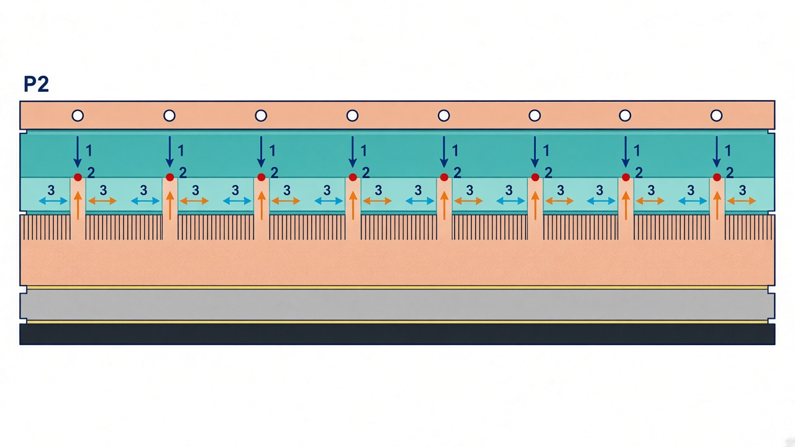
图 P2 · 示意渲染（位图，厚度不权威） 只用来看循环：① 下打 ② 驻点 ③ 短走 ④ 上抽。位图水缝往往画厚。厚度以 P2b 为准：余铜 ≥1.8 / 槽 1.5 / H=2.0 / 孔板 2.5 / 总 8.5 mm。
看图步骤 · P2 位图
① 蓝箭穿过 0.50 mm 孔往下。128 孔、1.60 L/min 时孔速约 1.06 m/s，ReD≈810。② 红点=驻点，hstag 量级 3.2×104 W/m²K。③ 短槽 0.40×1.50，L≤8 mm。④ 压差上抽，与热浮力无关。不要用这张位图估板厚。
7. HBM：低热流、怕冲蚀，所以不射流
单颗 12-Hi HBM3e 约 11×11 mm，DP-A 约 25 W，平均只有约 21 W/cm²，热点也不需要 3×104 W/m²K 的驻点 h。需要的是：盖住、均温、近壁速度低、不要周期性冲击。高速射流打在堆叠边缘或盖板空洞上，除了换热过剩，还会带来冲蚀、振动和局部压装风险。这是权项里的必要特征，不是画图省事。
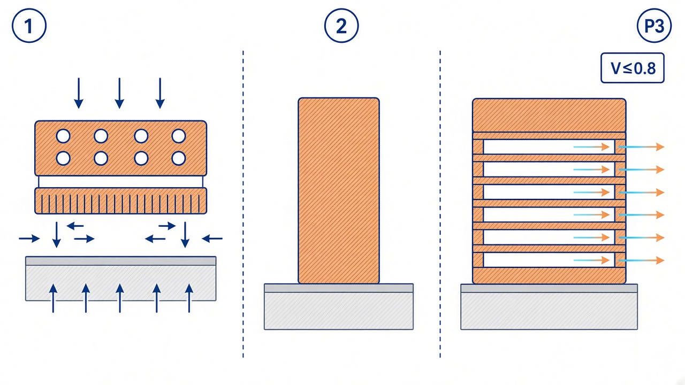
图 P3 · 自绘示意 左 GPU 有孔、有下打、有短抽；中 ② 是实心铜肋，箭过不去；右 HBM 盖上无孔，只走 0.60×1.50 mm 平槽，V≤0.8 m/s。左半若画成“爆炸开的盖”，以“有喷嘴”读；厚度以 A3 / 右半为准。
看图步骤 · P3
① 左：对照 P2，确认 GPU 侧存在向下的孔。这是高 h 侧。
② 中：隔离肋从盖到槽底连成一堵墙。它的水力意义是切断 GPU 短槽里 0.7 m/s 量级的横流，不让它扫到 HBM；结构意义是压装时把力从 GPU 区传到边框，减轻 HBM 焊球偏载。宽 2.0 mm，与加强环对位。
③ 右：没有圆孔。槽更宽（0.60 vs 0.40），16 条槽、0.40 L/min 时 V≈0.46 m/s，低于 0.80 m/s 帽。颜色只是轻微青→浅琥珀：HBM 支路吸热少，流体温升也小。不要在这一侧画下指箭。
8. 三种温度：流体、壁面、结温
必须分开说，不能用一张虹彩图把它们糊在一起。
| 符号 | 指什么 | 设计点量级（水，40 °C 进，DP-A） | 图上怎么认 |
|---|---|---|---|
| Tf | 当地 / 混合流体 | 进 40 °C → 出 ≈47.9 °C（+7.9 K） | 蓝→橙的箭头和歧管 |
| Tw / Tc | 铜壁 / 壳温 | 驻点最高，比当地流体高一个对流温差；目标壳–进液 <30.8 K @ 1100 W | die 心红斑 |
| Tj | 结温 | 再叠封装内阻 0.008–0.012 °C/W；包络常按 83–90 °C 看 | P6 虚红点，比壁峰更高 |
7.9 K 的算法：ṁ=992 kg/m³ × 2.0 L/min = 0.0331 kg/s，ΔTf=1100 / (0.0331×4179)≈7.9 K。1400 W 同流量则约 10.1 K——那是包络计算值，仍不能倒过来当流量公式。出口流体 48 °C 看起来“暖”，比起 70 °C 量级的壳温、更高的结温，它是三条线里最低的那条。
自绘真比例图 P4 · 温度顶视（布置基准） 板 95×75 mm。Die-A (19.0,23.5) 与 Die-B (49.0,23.5) 各 27×28，心红=壁温高峰。HBM 左 x=5.0、右 x=79.0，y=12.5/25.5/38.5/51.5，各 11×11，共 8 颗，壁温中等。上沿流体 40 °C，下沿流体 ~48 °C，颜色浅于 die 心。旧位图不再嵌入（曾画成每侧 5 颗）。
看图步骤 · P4
先看两块红：那是壁温，不是流体。热流从 die 中心扩出来，所以心红边黄。再数绿块：左 4 + 右 4 = 8，坐标与 P0 相同。HBM 的 q″ 约 21–26 W/cm²，只有 die 平均的三分之一左右，又没有射流冷斑。然后看上蓝下浅橙：这是流体的 8 K，绝不能画成和下沿一样红。最后看海军蓝肋：它隔的是水，也隔开两种壁温场。
自绘真比例图 P6 · 沿程三种温度（数值基准） 纵轴 35–95 °C。青实线 Tf 从 40 升到约 48（+7.9 K，斜率可见）。橙线 Tw 全程在流体之上，两驻点约 70 °C。红虚线 Tj 再高到约 85 °C，粉带为 83–90 °C 结温包络。横轴是工作循环站，不是一块长槽从进口浇到出口。旧位图不再嵌入（Tf 曾画成水平、OUTT 粘连）。
看图步骤 · P6
先认三条线的上下关系：Tj > Tw > Tf，处处成立。再认形状：流体几乎是平缓斜线，因为混合温升只由总功率和总流量决定，跟射流还是平槽无关；壁面和结温在两个 die 上各（或连成）一座峰，因为那里 q″ 高。HBM 矮包对应低 q″。出口流体即使到 48 °C，也比驻点壁温低二十多度——所以不能把出液歧管涂成“芯片红”。
壳–进液目标 <0.028 °C/W @ 1100 W 对应壳比进液高 <30.8 K，也就是壳 <70.8 °C（进液 40 °C）。这和橙峰画在 70 附近是同一量级。结温再加封装内阻：0.010 °C/W × 1100 W ≈ 11 K，落到 80 °C 出头，仍在常见 83–90 °C 包络里。这些是预算，不是测试报告。
9. 单射流单元：整板 GPU 区就是它重复 128 次
自绘真比例图 P5b · 单元剖面（厚度基准） 节距 3.0 mm。孔板 2.5、喷距 H=2.0、半槽 0.40×1.50、余铜 2.0。水缝与余铜一样厚，箱子不能画成大厅。蓝箭下打，红点驻点，侧向分走，橙箭从两侧上抽。
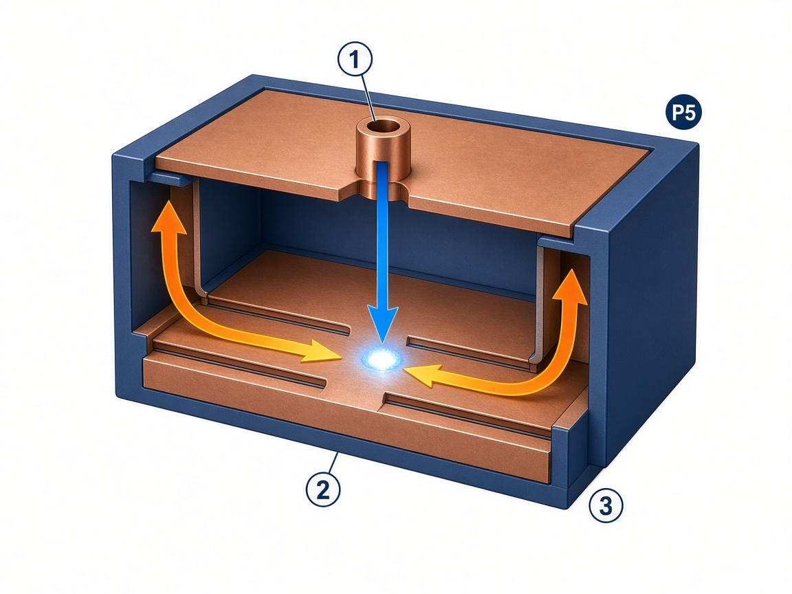
图 P5 · 示意渲染（位图，高度不权威） 只用来看三维：蓝下打 → 底面亮斑 → 左右分走 → 侧孔上抽。位图把静压箱画高了。真实 H=2.0 mm，以 P5b 为准。
看图步骤 · P5
把这一格在 21×21 mm 里按 3 mm 铺 8×8，就是一颗 die；两颗 die 就是 128 格。抽吸孔错开布置，避免两股壁面射流在中线对撞后无处可去。单元里没有“热的向上、冷的向下”——方向由孔板压差规定。孔口损失大约 1 kPa（K≈1.8），短槽本身只有约 0.4 kPa，所以压降不在齿上，而在孔口、歧管和以后的 UQD。
10. 压降：孔口小、槽短，预算在板内
设计点板内合计约 8–12 kPa，送样目标 ≤18 kPa，上限 20 kPa（不含机柜歧管）。分段量级：喷嘴孔口 ~1 kPa，GPU 短槽 + 抽吸 1–2 kPa，盖板静压箱 / 隔墙 3–5 kPa（须 CFD），HBM 槽 ~1 kPa。一对 Tray UQD 另计 4–8 kPa，要不要算进 20 kPa 窗，必须在 ICD 里写清楚。脏污和公差吃掉 18 到 20 之间的余量。过滤按最小孔径 0.50 mm 的 1/10 思考，系统侧投运 ≤25 μm。
11. 和托盘 / 机柜怎么接
GB300 计算托盘上是 4 块独立的 B300 冷板并联，不是一块通铺铜，更不能四板串联（串联会让第四颗吃三颗的预热）。单板 2.0 L/min 是本设计候选，真实分流由 Tray 孔板决定，SAT 实测。Grace 用自己的冷板，本文件不画它的流道。整柜 25–45 °C ↔ 59–177 L/min 是机柜表，不能把某一档写成这块铜的保证流量。漏液分层：冷板本体氦检；托盘和机柜漏液链不在本供货。
6. 几何设计（候选，开模前冻结）
型号 CP-B300-JM-01。外形 95×75×8.5 mm（含盖板，不含快接）。尺寸全部为候选，公差在图纸冻结后写入。看流向先回工作原理；看毫米坐标与三视图见图纸与尺寸。位图英文若粘连，以锁定表为准。
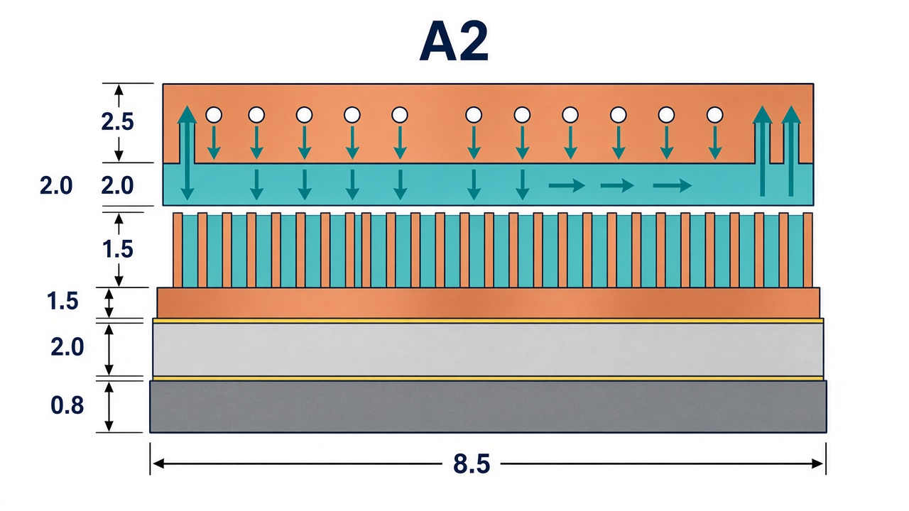
图 6-1 · 自绘示意 · 剖面 A-A 见图纸 A2 / 原理 P2：蓝箭下打 → 驻点 → 短槽 → 上抽。厚度以 P2b SVG 为准。
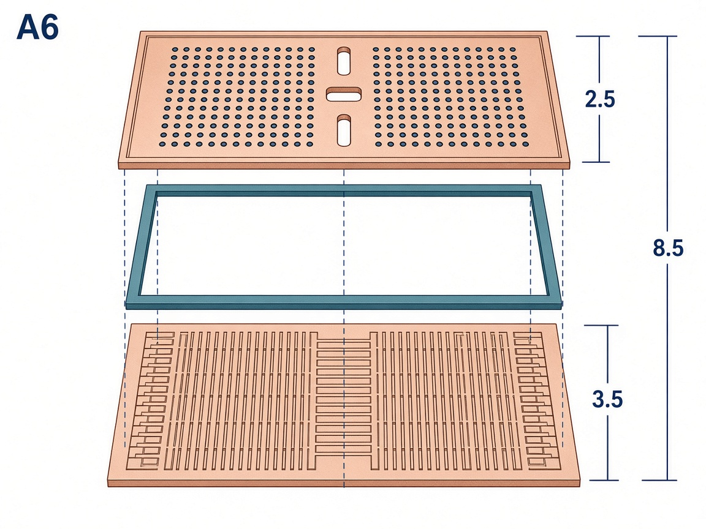
图 6-2 · 自绘示意 · 爆炸装配 见图纸 A6：盖 2.5 + 钎焊框 + 底 3.5，总装 8.5 mm。每 die 64 孔、合计 128。上 IN / 下 OUT。
6.1 分层
| 层 | 厚度（候选） | 功能 | 工艺 |
|---|---|---|---|
| 进液盖 / 喷嘴板 | 2.5 mm | 静压箱 + 128 个 GPU 喷嘴 + 抽吸孔；HBM 区无喷嘴 | 微钻或蚀刻；密封面精铣 |
| 换热底板 | 3.5 mm（槽深 1.5） | GPU 短槽 + HBM 长槽 + 隔离肋 | 铲齿或 CNC |
| 接触面余厚 | ≥1.8 mm | 扩热、刚度、防穿透 | 与底板一体 |
| 进出水嘴 | 按 UQD | 侧出或顶出，跟 Tray | 钎焊或一体 |
6.2 GPU 射流区（两区对称）
| 参数 | 符号 | 取值 | 依据 |
|---|---|---|---|
| 每 die 喷嘴阵列 | — | 8×8 = 64 | 覆盖 ≈24×24 mm |
| 两 die 合计 | N | 128 | — |
| 孔径 | D | 0.50 mm | 可微钻；堵点可接受 |
| 孔间距 | S / S/D | 3.0 mm / 6 | 文献窗 4–8 |
| 喷距 | H / H/D | 2.0 mm / 4 | 文献窗 2–6 |
| 短通道宽×高×长 | w×h×L | 0.40×1.50×8 mm | 驻点后排液 |
| 每 die 槽数 | — | 30 | 节距 0.80 mm |
| 抽吸 | — | 喷嘴间错排抽吸孔 | 抑交叉流 |
6.3 HBM 微通道区
| 参数 | 取值 | 理由 |
|---|---|---|
| 喷嘴 | 无 | 权项必要特征 |
| 通道 | 0.60×1.50 mm，流程沿 HBM 长边 | Dh 大于 GPU 槽，降速 |
| 近壁设计流速 | ≤ 0.80 m/s | 冲蚀 / 振动 |
| 隔离肋宽 | 2.0 mm，与加强环对位 | 隔流 + 抗弯 |
6.4 流量分配（孔阻设计）
| 回路 | 设计流量（2.0 L/min 时） | 实现 |
|---|---|---|
| 两 GPU 射流区 | 1.60 L/min（80%） | 128 孔总面积约 25.1 mm² |
| HBM 区 | 0.40 L/min（20%） | 单独进液缝或更宽槽，不用喷嘴减压 |
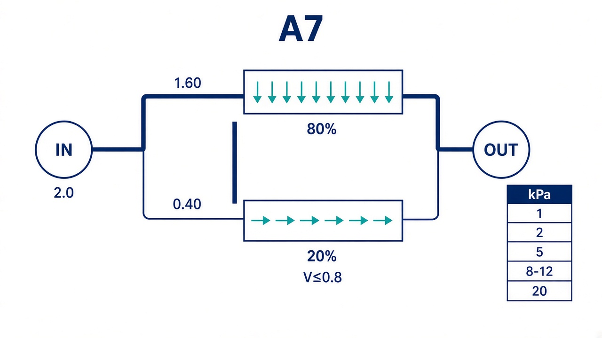
图 6-3 · 自绘示意 · 水力分配 2.0 L/min 进液：GPU 两区共 1.60 L/min（孔速约 1.06 m/s），HBM 0.40 L/min（近壁约 0.46 m/s）。隔离肋禁止高速串到 HBM。板内压降预算 8–12 kPa，上限 20 kPa。图中英文以本节数字为准。
分配靠盖板开孔与隔墙，不靠外置调节阀。样件用分区流量计标定，偏差目标 ±10%。
6.5 零件与图纸清单（候选）
| 图号 | 名称 | 数量 | 材料 / 备注 |
|---|---|---|---|
| JM01-100 | 换热底板（短槽+隔离肋+HBM 槽） | 1 | C110 / C1020；铲齿或 CNC |
| JM01-200 | 喷嘴盖板（128 孔 + 抽吸 + 静压箱） | 1 | 同铜；微钻/蚀刻 |
| JM01-310 | 进液水嘴 | 1 | 跟 Tray UQD，待 ICD |
| JM01-320 | 出液水嘴 | 1 | 同上 |
| JM01-400 | 钎料 / 封接框 | 1 套 | 不得流入 0.40 mm 槽 |
| JM01-500 | 接触面（焊后精铣） | — | 平面度 0.05 mm，Ra 0.8 μm |
图纸与尺寸
型号 CP-B300-JM-01。外形候选 95×75×8.5 mm（不含 UQD）。NVIDIA 未公布 B300 盖板轮廓，下表坐标是本报告冻结的同一套候选布置，所有新图必须与它对齐。比例以本节 SVG 为准；位图只作渲染，英文字母若粘连，以表格和中文图注为准。
锁定封装坐标（原点：冷板左下角，X 向右，Y 向上，mm）
| 对象 | x0 | y0 | 宽 × 高 | 备注 |
|---|---|---|---|---|
| 冷板外形 | 0 | 0 | 95 × 75 × 8.5 | 候选，待 ICD |
| Die-A | 19.0 | 23.5 | 27 × 28 | 左计算 die |
| NV-HBI 缝 | 46.0 | 23.5 | 3 × 28 | 不打密集射流 |
| Die-B | 49.0 | 23.5 | 27 × 28 | 右计算 die |
| 射流阵 A / B | 22.0 / 52.0 | 27.0 | 21 × 21 | 8×8，节距 3.0，落在 27×28 内 |
| HBM-L1…L4 | 5.0 | 12.5 + n×13 | 11 × 11 | 左侧一列 4 颗，竖缝 2 mm |
| HBM-R1…R4 | 79.0 | 12.5 + n×13 | 11 × 11 | 右侧一列 4 颗 |
| 隔离肋左 / 右 | 16.5 / 76.5 | 12.5 | 2 × 50 | 切断 GPU↔HBM 串流 |
| 隔离肋南 / 北 | 19.0 | 21.5 / 51.5 | 57 × 2 | die 上下边 |
| 进液歧管带 | 8 | 66 | 79 × 7 | 板上沿，IN |
| 出液歧管带 | 8 | 2 | 79 × 7 | 板下沿，OUT |
HBM 列：y = 12.5, 25.5, 38.5, 51.5。校核：5+11+0.5+2+0.5+27+3+27+0.5+2+0.5+11+5 = 95 mm。竖向 12.5+50+12.5 = 75 mm。厚度：余铜 2.0 + 槽 1.5 + H 2.0 + 孔板 2.5 = 8.0（腔）；外形 8.5 含周边钎缝 / 水嘴台阶 0.5。
图纸清单
| 图号 | 名称 | 比例 | 状态 |
|---|---|---|---|
| P0 / P2b / P4 / P5b | 顶视、GPU 剖面、温度顶视、单元剖面（inline SVG） | 1:1 mm | 比例 / 布置基准 |
| P6 / P7 | 沿程温度、能量分流（inline SVG） | 数值基准 | Tf 40→48；429+429+198+44=1100 |
| P1 / P2 / P3 / P5 | 三维流向 / GPU 循环渲染 / HBM 对比 / 单元渲染 | 示意渲染 | 位图；厚度以 P2b / P5b 为准 |
| A0 | 外形三视图 | 顶视 95:75 | 候选 · 位图渲染 |
| A1 | 封装分区叠加 | 同 P0 | 候选 · 以 SVG 纠偏 |
| A2 | 剖面 A-A（GPU） | 厚度按 mm | 候选 · 以 P2b 纠偏 |
| A3 | 剖面 B-B（HBM） | 厚度按 mm | 候选 |
| A4 | 射流单元 | S=3.0 | 候选 |
| A5 | GPU 槽平面 | 27×28 | 候选 |
| A6 | 爆炸 / 工艺栈 | 2.5 + 框 + 3.5 | 候选 |
| A7 | 水力简图 | — | 与 6.4 表一致 |
| A8 | 托盘四板 | 示意 | 不画 Grace 冷板细节 |
A0 · 外形三视图
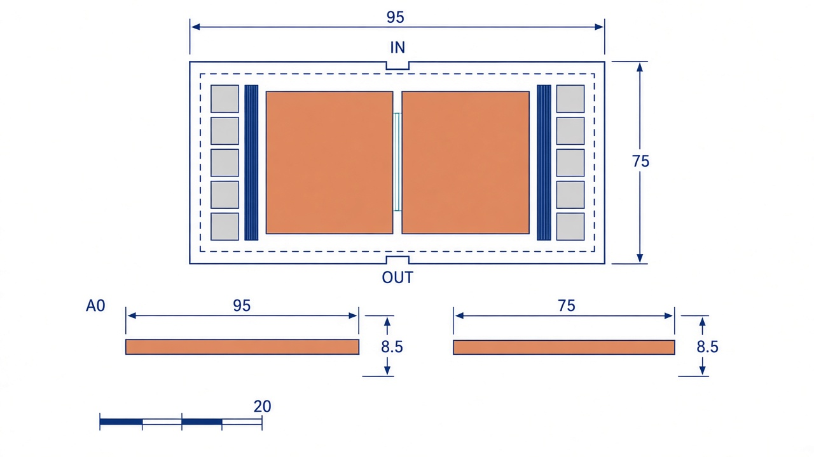
图 A0 · 自绘示意 顶视 95×75，正视 / 侧视必须看起来像 8.5 mm 薄板，不是厚砖。上 IN、下 OUT，周边虚线 3 mm 压装让位。位图把 HBM 画成细颗粒时，以锁定表「每侧 4×11 mm」为准。图中 INNOW / OUTTET 即 IN / OUT。
A1 · 封装 + 分区叠加
图 A1 · 自绘示意 与 P0 同一套布置：两颗 27×28、8×8 密点（节距 3.0，阵面 21×21）、两侧 HBM 只走微通道、2 mm 肋。位图若把 HBM 挤到四角或 HBI 画太宽，以 SVG 为准。
A2 · 剖面 A-A（过一颗 GPU die）
图 A2 · 自绘示意 自上而下：孔板 2.5 → 喷距 H=2.0（D=0.50）→ 短槽 0.40×1.50、L≤8 → 余铜 ≥1.8（本图取 2.0）→ 薄 TIM2 / 盖 / TIM1 / 硅。水缝不得画得比铜厚。8.5 是板厚不是板宽。细齿槽以 P2b SVG 为准。
A3 · 剖面 B-B（过 HBM）
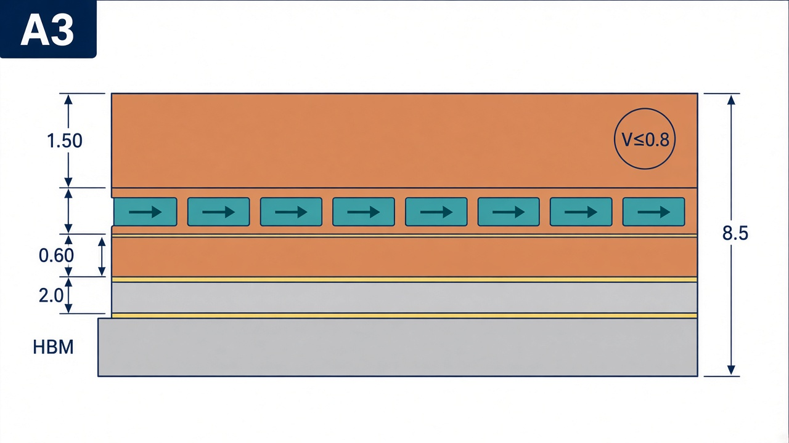
图 A3 · 自绘示意 无射流。槽 0.60 宽 × 1.50 高，不是把 0.60 标在某层厚度上。近壁 V≤0.8 m/s。铜栈与 A2 同一套厚度语言，才能对比。
A4 · 射流单元
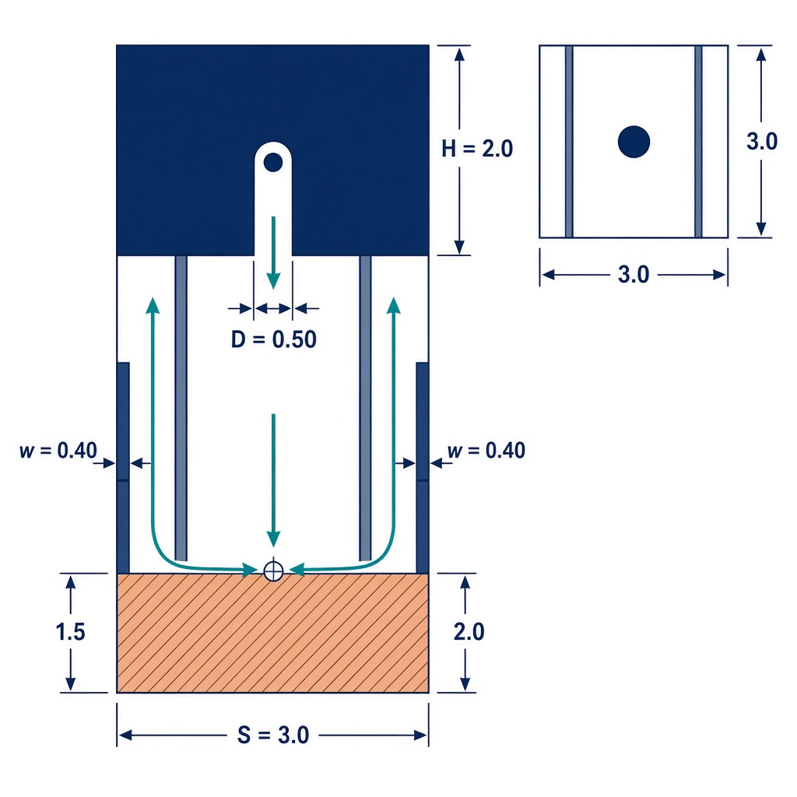
图 A4 · 自绘示意 重复单元：D=0.50，S=3.0，H=2.0，半槽 w=0.40。与 P5 是同一单元的工程尺寸版。
A5 · GPU 槽平面
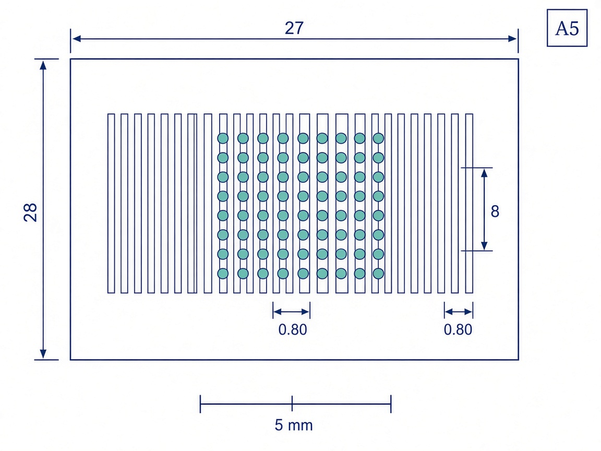
图 A5 · 自绘示意 单 die 27×28：30 条短槽，宽 0.40、长 ≤8、节距 0.80，看上去应是密梳，不是 6 条大缝。其上叠 8×8 落点（21×21）。位图若把槽画满 28 mm 长，以“L≤8”为准。
A6 · 爆炸 / 工艺栈
图 A6 · 自绘示意 只有三件：喷嘴盖 2.5 mm（两处密 8×8 孔）+ 钎焊框 0.5 mm（空心框，不是一块厚水层）+ 底板 3.5 mm（GPU 密槽 + HBM 宽槽 + 肋）。爆炸间隙要小，总装 8.5 mm，不是 50 mm 高三明治。上 IN / 下 OUT 在盖板进出。
A7 · 水力简图
图 A7 · 自绘示意 与 §6.4 同一组数：IN 2.0 L/min → GPU 1.60（80%）/ HBM 0.40（20%）→ OUT。HBM 支路 V≤0.8。压降档 1 / 2 / 5 / 8–12 / 上限 20 kPa。OUTTET=OUT。
A8 · 托盘语境
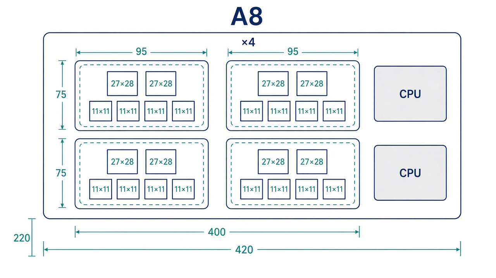
图 A8 · 自绘示意 GB300 计算托盘上 4 块独立 B300 冷板，不是一块通铺铜。每块内部布置与 P0 相同（左 4 HBM + 双 die + 右 4 HBM）。右侧空框只标 CPU，不画 Grace 冷板细节。位图上的 400/420/220 不是本设计尺寸，忽略。
7. 热工水力估算（0 维 / 1 维，送 CFD 前）
物性取饱和水 40 °C：ρ=992 kg/m³，cp=4179 J/kg·K，μ=6.53×10−4 Pa·s，k=0.631 W/m·K，Pr≈4.3。计算仅用于方案可行性，不是保证点。
7.1 流体温升
ΔTf = P / (ṁ cp)，ṁ = ρQ。
| Q | 1100 W | 1400 W |
|---|---|---|
| 2.0 L/min（ṁ=0.0331 kg/s） | 7.9 K | 10.1 K |
| 2.4 L/min | 6.6 K | 8.4 K |
设计点流体温升约 8 K，与“常用 <10 K”一致，但不得倒过来定流量。
7.2 射流孔速与雷诺数（GPU 区 1.60 L/min）
A_jet = 128 × π × (0.25 mm)² = 25.1 mm²
V_jet = Q / A_jet = (1.60 L/min) / 25.1 mm² ≈ 1.06 m/s
Re_D = ρ V D / μ ≈ 810
H/D = 4, S/D = 6属层流–过渡射流。驻点 Nu 量级按 Nu ~ 0.5 Re0.5 Pr0.4 ≈ 25，hstag ≈ Nu k/D ≈ 3.2×104 W/m²K。这只代表驻点，整区还靠壁面射流和短槽。
7.3 短通道（GPU）
槽：0.40 × 1.50 mm，Dh = 0.63 mm；每 die 30 条，共 60 条
单槽流量 ≈ 1.60/60 L/min → V ≈ 0.74 m/s
Re ≈ 710（层流）
f ≈ 64/Re ≈ 0.09
ΔP_ch ≈ f (L/Dh) ρV²/2 ≈ 0.4 kPa（仅 8 mm 槽）压降不在短槽，而在孔口、歧管和快接。
7.4 HBM 区流速校核（0.40 L/min）
设 16 条 0.60×1.50 mm 槽，V≈0.46 m/s，低于 0.80 m/s 帽。
7.5 压降预算
| 分段 | 估算 | 备注 |
|---|---|---|
| 喷嘴孔口（K≈1.8） | ≈1.0 kPa | 0.5 K ρ V² |
| GPU 短槽 + 抽吸 | ≈1–2 kPa | 层流短流程 |
| 盖板静压箱 / 隔墙 | ≈3–5 kPa | 须 CFD |
| HBM 槽 | ≈1 kPa | 低速 |
| 板内合计 | ≈8–12 kPa | 设计点 |
| 一对 UQD（参考） | 4–8 kPa | 不计入 20 kPa 冷板窗则须在 ICD 声明 |
冷板本体目标 ≤18 kPa @ 2.0 L/min，给脏污和公差留到 20 kPa。
7.6 对流热阻量级
GPU 两区投影约 12.5 cm²，短槽把润湿面积放大到约 3–4 倍；再叠加 128 个驻点。取等效 h·Awet ≈ 70–100 W/K，则 Rconv ≈ 0.010–0.014 °C/W。加上铜壁与 TIM2，壳–进液落在 0.023–0.028，DP-A 可行。DP-B 要把 hA 再抬约 20%，靠流量到 2.4 L/min 或减 TIM2，或加密为 10×10 阵列（须重算压降）。
8. 材料、工艺与公差
| 件 | 材料 | 工艺 | 关键公差 |
|---|---|---|---|
| 底板 | C110 / C1020 | 铲齿或 CNC 短槽 + 隔离肋 | 槽宽 ±0.03 mm；接触面平面度 0.05 mm |
| 喷嘴盖 | 同铜 | 微钻 0.50 mm 或蚀刻；抽吸孔错排 | 孔径 ±0.03；与 die 对位 ±0.20 mm |
| 封合 | — | 真空钎焊（首选）或扩散焊 | 钎料不得进 0.40 mm 槽；100% 氦检 |
| 密封面 | — | 焊后精铣 | Ra ≤0.8 μm |
| 表面 | 可选 Ni | 接触面局部镀 | 不进流道 |
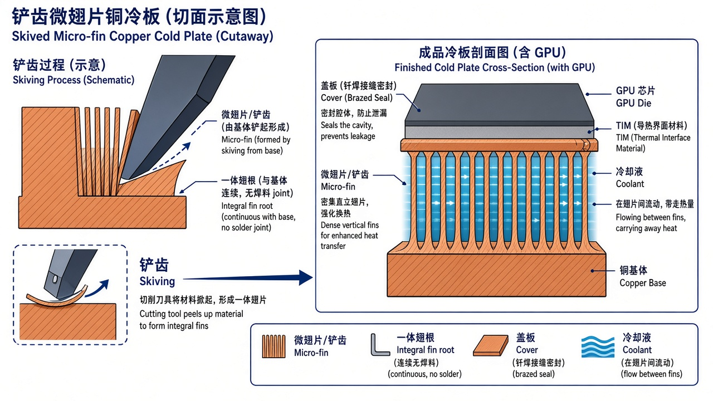
图 8-1 · 自绘示意 底板优先铲齿或 CNC 短槽，不是整板增材。铲齿一体翅根导热好、适合量产；本设计 GPU 区槽长短（≤8 mm），比传统长铲齿更易控流。
不采用整板 LPBF 出货：残粉与导热折损对 0.50 mm 孔不可接受。增材只允许做喷嘴盖验证件，密封面仍机加。
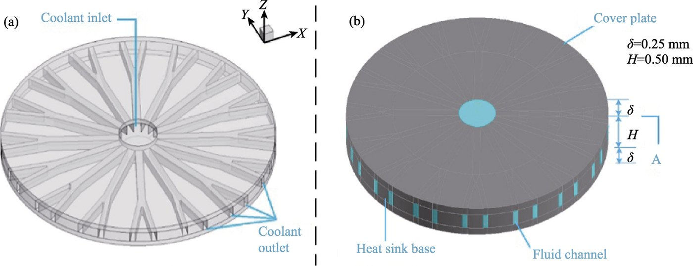
论文原图 · 盖板 + 微通道 机加/蚀刻盖板与底板封合，是本设计量产路线的同类结构。来源：SciOpen 微通道强化换热综述 Fig. 8。

论文原图 · 模块内集成冷板 独立冷板 + TIM2 是 12–18 个月可交货路径；盖板内嵌（MLCP）是下一档。来源：芯片级微通道综述 Fig. 9。
清洗：超声 + 去离子冲洗；按最小孔径 1/10 设过滤。出厂带流量–压降–红外三条曲线。
9. 接口、托盘与系统约束
| 界面 | 要求 | 责任 |
|---|---|---|
| TIM2 | 与盖板导热垫/液金按 OEM；冷板不规定品牌 | 整机 |
| 压装 | 隔离肋参与承载；HBM 区压强低于 GPU 区 | 冷板 + 托盘夹具 |
| Tray | GB300：4×B300 + 2×Grace / Tray。四块 GPU 冷板并联，禁止串联 | OEM |
| 整柜水力 | 25/30/35/40/45 °C ↔ 59/71/89/119/177 L/min；压降 16–127 kPa | CDU / 机柜，本冷板只吃掉自己的 ΔP |
| 单板流量 | 由 Tray 孔板分配；设计按 2.0 L/min，SAT 实测 | 待 ICD |
| 快接 | 跟 Tray UQD，不改口径 | OEM |
| 漏液 | 冷板本体氦检；托盘/机柜漏液链不在本供货 | 分层 |
Grace 300 W 用单独冷板，不与 B300 共一块铜。NVSwitch Tray 水温窗口 2–50 °C 不得写成 GPU 冷板保证。
10. 可靠性、堵塞与验收
10.1 风险与对策
| 风险 | 对策 |
|---|---|
| 喷嘴堵 | 0.50 mm 孔；25 μm 过滤；可选方案 B 可换芯（本版先做成钎焊盖，结构预留拆芯凸台） |
| 交叉流 | 短槽 + 抽吸孔；两 die 分腔 |
| HBM 冲蚀 | 无射流 + 流速帽 + 隔离肋 |
| 钎料堵槽 | 钎料槽远离 0.40 mm 通道；X-ray / CT 抽检 |
| PG25 性能掉 | 同流量下 R 按 +15% 校核；必要时加到 2.2 L/min |
| 失冷 | 行业经验冷板可中断窗口约 90 s，非 NVIDIA 官方秒级指标；本冷板不写保证秒数 |
10.2 建议验收（FAT 冷板级）
- 外观、外形、平面度、Ra。
- 氦检 100%。
- 水、40 °C、2.0 L/min：压降 ≤18 kPa。
- 等效 1100 W TTV：Rθ,c-in <0.028 °C/W；两加热区温差 ≤5 K。
- 红外确认两驻点对准 die 中心，HBM 区无射流冷斑网格。
- 分区流量：GPU/HBM = 80/20 ±10%。
- （抽检）PG25 复测压降与热阻。
机柜 SAT 只验证本板落在 OEM 分流后的流量–压降点，不在冷板厂用 10 K 公式出报告。
11. 开模 / 送样前必须关闭的项
| 编号 | 项 | 关闭条件 |
|---|---|---|
| C-01 | B300 盖板外形、螺丝、TIM 窗、die/HBM 坐标 | OEM 封装图或 SXM ICD |
| C-02 | 官方热图（两 die + 8 HBM） | NVIDIA / OEM power map |
| C-03 | 单板额定流量与压降窗 | Tray 分流计算 + Table 27 |
| C-04 | UQD 型号、水嘴方向、压装力 | 订单 ICD |
| C-05 | 工质（DI vs PG25）与缓蚀 | 订单 |
| C-06 | 保证点写 1100 还是兼 1400 | 商务；本设计默认只保证 1100 |
| C-07 | CFD + 首件 TTV | 关闭前不得开量产模具 |
12. 来源与局限
- NVIDIA，Inside NVIDIA Blackwell Ultra，2025-08-22：双 die、NV-HBI 10 TB/s、160 SM、8×12-Hi HBM3e、288 GB / 8 TB/s、TGP up to 1400 W。
- NVIDIA Blackwell Ultra 数据手册公开页：TDP configurable up to 1400 W / 1100 W 两档；279/270 GB 可用口径。
- Lenovo Press LP2357：B300 TGP 1100 W；GB300 NVL72 135 kW TDP / 155 kW EDP；Table 27 温度–流量–压降。
- 本仓库《NVIDIA GB300 NVL72 冷却系统总体设计报告 v2.2》。
- 同目录《AI算力芯片液冷冷板专利分析报告 v1.4》：方案 A、工艺、热阻标尺。
- Hussain et al., Energies 2021：射流三区与 H/D。
- OCP / Meta 公开 TIM2 面积热阻约 0.1–0.2 °C·cm²/W。